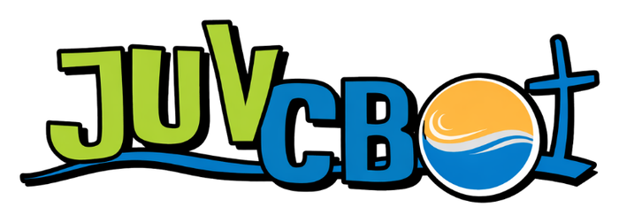
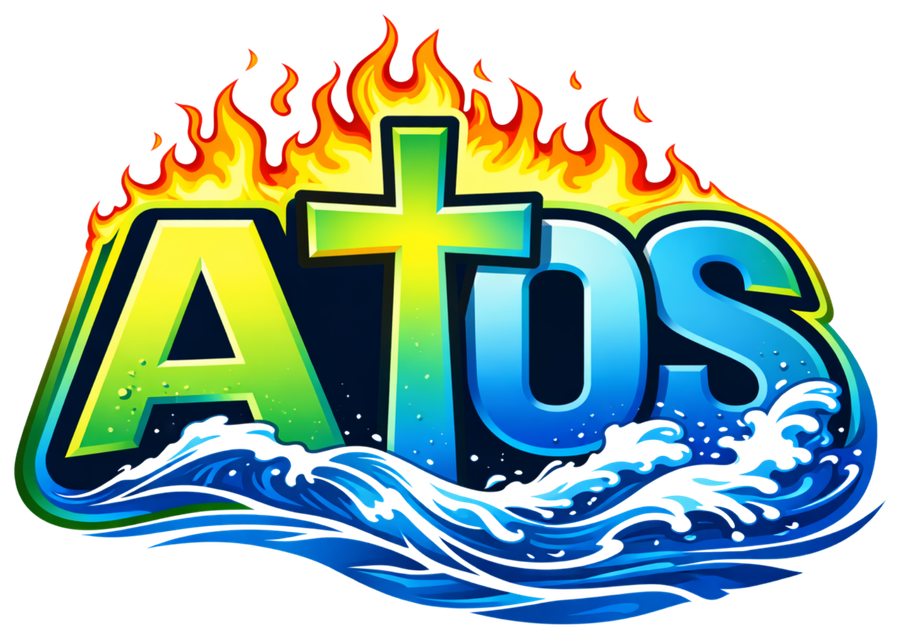

1
Quiz Bíblico
📅 Dia 05/12- 20 questões: 15 valendo e 5 para desempate, se houver.
- Um participante por equipe.
- Cada equipe pode trocar o participante apenas 1 vez, depois da quinta pergunta.


Tudo o que você precisa saber sobre as provas, entregas e pontuações. Leia com atenção e bora representar o seu grupo!
Qual carta cada grupo escreve?
Exemplos de pontuação
Sugestões
Exemplos de desafios
O que vale ponto